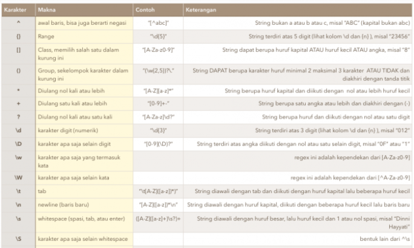

REGEX
Apa itu Regex ?
Regex adalah singkatan dari Regular Expresion. Regex merupakan sebuah teks (string) yang
mendefinisikan sebuah pola pencarian sehingga dapat membantu kita untuk melakukan
matching (pencocokan), locate (pencarian), dan manipulasi teks. Konsep tentang regex
pertamakali muncul di tahun 1951, ketika seorang ilmuan matematikan bernama Stephen Cole
Kleene memformulasikan definisi tentang bahasa formal.
Contoh ekspresi reguler :
♦ (0+1)* : himpunan seluruh string yang dapat dibentuk dari simbol ‘0’ dan ‘1’
♦ (0+1)*00(0+1)* : himpunan string biner yang mengandung paling sedikit satu substring
‘00’
♦ (0+1)*00 : himpunan string biner yang diakhiri dengan ‘00’

Contoh 1 & 2 Pemanfaatan Regex
1. Regex untuk Mesin Pencari
Nah, menggunakan ekspresi reguler untuk menemukan konten di web dianggap sebagai grail
suci pencarian. Tetapi web adalah binatang buas dan mendukung mesin regex yang lengkap
akan terlalu menuntut untuk server Google. Ini menghabiskan banyak sumber daya
komputasi. Oleh karena itu, tidak ada yang benar- benar menyediakan mesin telusur yang
mengizinkan semua perintah regex.
Namun, mesin pencari web seperti Google mendukung sejumlah perintah regex. Misalnya,
Anda dapat menelusuri kueri yang TIDAK berisi kata tertentu:
Penelusuran "Teori Bahasa" akan memberi Anda semua hasil Teori yang tidak berakhir
dengan kata Bahasa. Jika nama depan didominasi seperti ini, menggunakan operator
penelusuran
lanjutan merupakan ekstensi yang cukup berguna.
Dengan ledakan data dan pengetahuan, menguasai pencarian adalah keterampilan penting di
abad ke-21.
2. Regex dalam Teori Bahasa Formal
Ilmu komputer teoretis adalah dasar dari semua ilmu komputer. Nama-nama besar dalam ilmu
komputer, Alan Turing, Gereja Alonzo, dan Steven Kleene, semuanya menghabiskan waktu dan
upaya yang signifikan untuk mempelajari dan mengembangkan ekspresi reguler.
Jika Anda ingin menjadi ilmuwan komputer yang hebat, Anda perlu mengetahui bagian yang
adil dari ilmu komputer teoretis. Anda perlu tahu tentang teori bahasa formal. Anda
perlu mengetahui tentang ekspresi reguler yang merupakan inti dari fondasi teoretis ini.
Bagaimana ekspresi reguler berhubungan dengan teori bahasa formal? Setiap ekspresi
reguler menentukan "bahasa" dari kata-kata yang dapat diterima. Semua kata yang cocok
dengan ekspresi reguler ada dalam bahasa ini. Semua kata yang tidak cocok dengan
ekspresi reguler tidak ada dalam bahasa ini. Dengan cara ini, Anda dapat membuat
kumpulan aturan yang tepat untuk mendeskripsikan bahasa formal apa pun — hanya dengan
menggunakan kekuatan ekspresi reguler.

Contoh 3 & 4 Pemanfaatan Regex
3. Regex untuk Validasi input
Contoh penggunaan regex untuk validasi input adalah sebagai berikut.
Anggap kita menginginkan input yang dimasukkan user terbatas pada karakter + ( ) - dan
numerik serta spasi untuk input nomor telepon. (tanda tambah untuk memasukkan nomor
telepon luar negeri). Dalam Java, kita bisa menggunakan kode sebagai berikut. String
regex = “[/+/(/)/-0-9s]*”; if (inputUser.matches(regex)) return true; // atau save
input, atau jalankan proses, atau print “input valid”.

4. Regex untuk Bahasa pemrograman
Ya, Anda telah mempelajari tentang parser pada poin sebelumnya. Dan pengurai diperlukan
untuk bahasa pemrograman apa pun. Terus terang: tidak ada bahasa pemrograman di dunia
yang tidak bergantung pada ekspresi reguler untuk implementasinya sendiri.
Tetapi masih ada lagi: ekspresi reguler juga sangat populer saat menulis kode dalam
bahasa pemrograman apa pun. Beberapa bahasa pemrograman seperti Perl menyediakan
fungsionalitas regex bawaan: Anda bahkan tidak perlu mengimpor pustaka
eksternal.
Saya jamin, jika Anda menjadi pembuat kode profesional, Anda akan menggunakan ekspresi
reguler dalam banyak proyek pengkodean. Dan semakin sering Anda menggunakannya, semakin
Anda akan belajar untuk mencintai dan menghargai kekuatan ekspresi reguler.